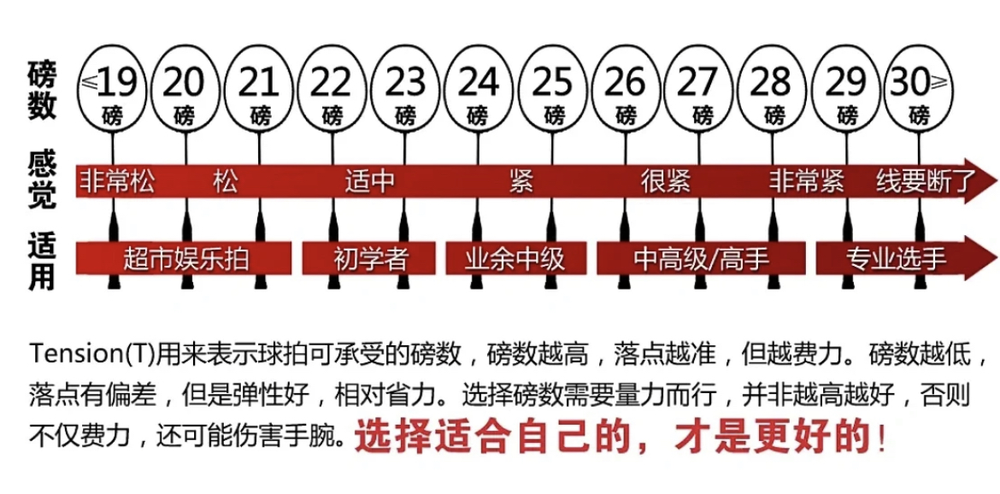
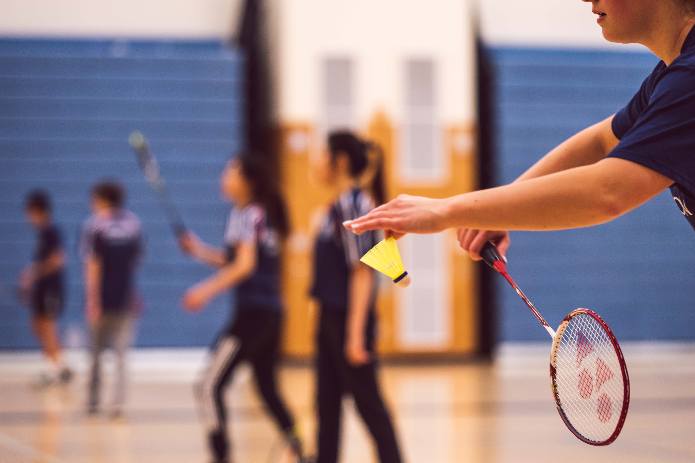

<!DOCTYPE html>
<html lang="en">
<head>
    <meta charset="UTF-8">
    <meta http-equiv="X-UA-Compatible" content="IE=edge">
    <meta name="viewport" content="width=device-width, initial-scale=1.0">
    <title>羽球拍</title>
    <link rel="stylesheet" href="Style.css">
</head>
<body>
	<!-- 导航栏容器 -->
	<nav>
		<!-- 导航项 -->
		<a href="index.html"target="_blank"></a>
		<a href="羽球拍.html"target="_blank"></a>
		<a href="羽球.html"target="_blank"></a>
		<a href="羽球鞋.html"target="_blank"></a>
	</nav>
</body>

<body>
    <div class="box1">
      <div style="background-color: rgb(240, 248, 255, 0.8);">
      <div style="margin: 20px;">
        <br>
      <h1 style="text-align:center;">羽球拍 BADMINTON RACKET</h1>
      <hr>
      <h2>工欲善其事，必先利其器。赛场上选择的羽毛球拍是否合适，会直接影响到个人发挥。那么如何选择适合自己的专业羽毛球拍呢？需要考虑以下因素：</h2>
      <ul style="font: size 25px;font-weight:900;">
          <li>球拍重量</li>
          <li>磅数大小</li>
          <li>拍柄软硬程度</li>
          <li>打法风格</li>
      </ul>
      <div style="text-align:center;">
          
        </div>
      <h3><word id="my">球拍重量</word></h3>
        <h3>球拍重量取决于参数U，U越大，球拍越轻。球拍上一般会标明参数U，一般通用的标法为U、2U、3U、4U。一般全碳羽毛球拍的重量大多为2U(90-94克)或3U(85-89克)、4U(80-84克)，而铝框羽毛球拍的重量一般在U(95-99克)以上，也有少数全碳羽毛球拍的重量低至80克左右。一般来说，羽毛球拍越重，出手速度越快，但当超出一定范围时，会影响肩颈活动度，对击球能力也有一定的影响。</h3>
      <div style="text-align:center;">
          
        </div>
      <h3><word id="my">磅数大小</word></h3>
        <h3>羽毛球拍的磅数指的是羽毛球拍上弦的拉力，也就是羽线的张力，张力越大，击球的时候线的形变就越小，羽毛球和球拍接触的时间也就越短，也能够更精准的控制球路和球的落点；同理，磅数越低，球与拍的接触时间就越长，球路和球的落点就越不好控制，甚至磅数太低，相同力量在同一点击球，落点都可能不一样。一般来说，羽毛球拍按磅数分为五个级别，分别是低磅、中低磅、中磅、中高磅和高磅。低磅球拍属于超市娱乐拍，初学者可使用中低磅球拍进行练习，业余中级选手可使用中磅球拍，中高磅和高磅球拍更适合专业选手使用。</h3>
      <div style="text-align:center;">
          
        </div>
      <h3><word id="my">拍柄软硬程度</word></h3>
        <h3>选择球拍时要注意球拍的整体结构、弹性和软硬度。拿到拍子后，挥动一下，观察拍柄是否震动，根据需求选择弹性适中、软硬适中的球拍。一般来说，硬度越大控制性越好，力量也越大，但业余选手很难打出来，所以应选择弹性适中的类型。</h3>
      <div style="text-align:center;">
          
        </div>
      <h3><word id="my">打法风格</word></h3>
        <h3>根据每个球友自己的打法不同，大致可以分为进攻型、防守型、攻守均衡型三种风格。 </h3>
      <h3>进攻型球拍，适合喜欢进攻、杀球的人使用。该类型球拍一般较重，建议选择2U（90-94 克）、3U（85-89克）的重量，球杆平衡点高，硬度大，可以使用标准长度，也可以考虑加长型球拍。</h3>
      <h3> 防守型球拍，适合喜欢防守、后发制人的选手使用。该类型球拍一般较轻，建议选择4U（80-84 克）、5U（75-79克）的重量，球杆平衡点低，中管偏软。</h3>
      <h3>攻守兼备型，又称“控制型”，适合初学者或者是控制型的选手。该类型球拍重量适中， 建议选择3U（85-89克）、4U（80-84 克）的重量，球杆平衡点适中，中管硬度适中。</h3>
      <br>
    </div>
    </div>
  </div>

</body>
</html>